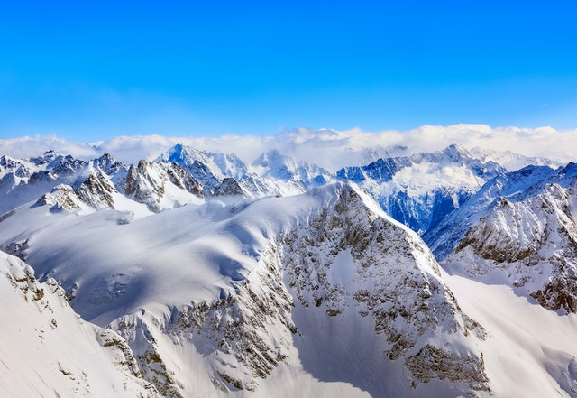

THE FOLLOWING SLIDESHOW IS DONE USING COLORBOX.JS
{kind=link}


ABOUT MOUNTEVERST
Mount Everest is part of the Himalayan range, and it is the tallest peak at 8,844.43 meters (29,016 feet) high. And it's still growing at a height of about 40 centimeters (16 inches) per century.
ABOUT TAJMAHAL
Taj Mahal is a famous Indian landmark and tourist magnet, attracting more than a million tourists every year,The most recognizable feature is the white dome at the peak of the mausoleum. Often called the 'onion dome', it rises to about 35 meters (115 feet) and is surrounded by four other domes.
ABOUT INDIAN PARLIAMENT
Parliament is the supreme legislative body of a country. Our Parliament comprises of the President and the two Houses—Lok Sabha (House of the People) and Rajya Sabha (Council of States). Current President of India - Pranab Mukherjee-Since 25 July 2012
ABOUT GOLDEN TEMPLE
Golden Temple is also known as Sri Harmandir Sahab and Sri Darbar Sahab. Guru Arjun Dev, the fifth Sikh Guru, gave the idea of construction of a temple where Sikhs can come and worship. The land for the temple was bought from the Zamindars by Guru Ramdas. Hazrat Mian Mir Ji, a Muslim saint, laid the foundation of the temple and the construction was supervised by Guru Arjun Dev.